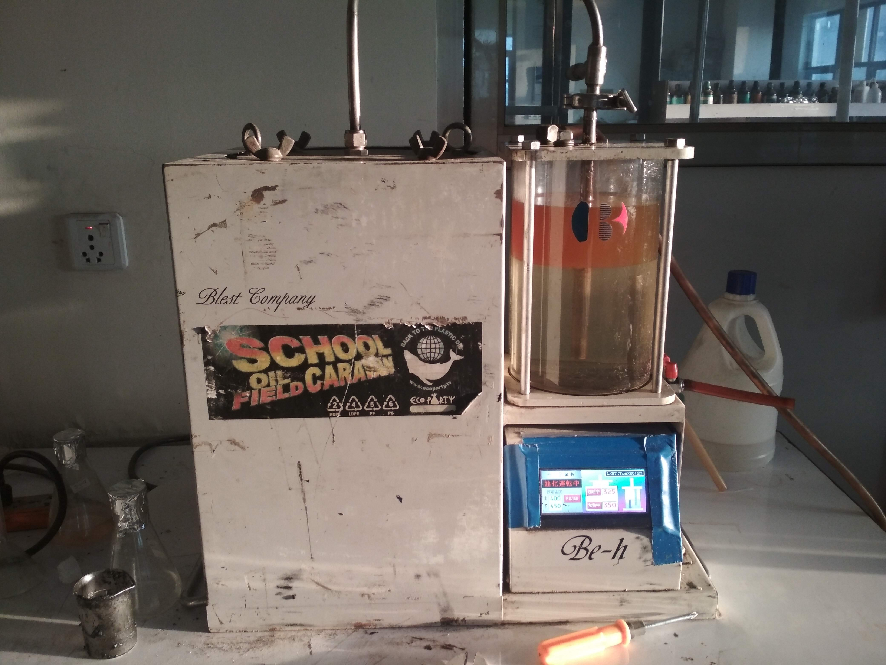

SUSTAINABLE ENERGY / PLASTIC FUEL
From waste plastics to liquid fuels
My work investigates the conversion of waste plastics into liquid fuels through pyrolysis. These photographs document the equipment, liquid product collection, and samples used in this research.
Research overview
Pyrolysis breaks down plastics through heating in an oxygen-limited environment. The resulting vapours can be cooled and collected as liquid products. My research explores plastic-derived fuels within the broader study of alternative fuels, engine performance, combustion, and emissions.
Inside the laboratory
Equipment, recovery, and samples from my experimental work. Select a photograph to view the original.

Plastic-to-fuel conversion
Laboratory apparatus used to investigate plastic-to-fuel conversion and liquid product recovery.

Collecting liquid products
Collection of a liquid sample during laboratory work on plastic-to-fuel conversion.

Distillation apparatus
Laboratory equipment used in the processing and study of plastic-derived liquid fuels.

Liquid fuel samples
Samples labelled PP, HGPD, and LGPD, showing differences in colour and collected volume.